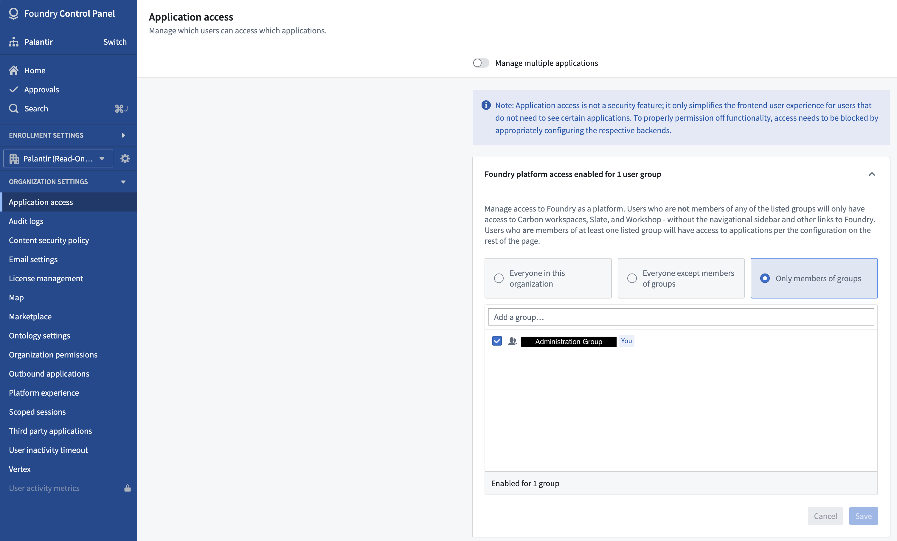

You can combine the security controls of Workshop and permission configuration options in Control Panel to create a read-only dashboard that is separated from other access workflows in your Palantir enrollment.
Consider a business that uses a Palantir enrollment to perform sensitive processes. Due to the sensitivity of these processes, the business chooses to only provision Palantir accounts to a specific set of users listed in their identity provider (foundry-users-sg, for example). As these processes develop, the business realizes a need to share some specific subset of the output data more broadly. However, this data is meant to be consumed in a read-only manner, and the business wants to enforce that control programmatically. The list of new users is tracked in a separate group (read-only-foundry-users-sg, for example) that will have some overlap with existing users.
The first step to enable a read-only dashboard is to make changes to administrative configurations in Control Panel. These changes will ensure that new user access can be configured without impacting existing access.
An Organization is the lowest level security concept used for configuring workflows within the same enrollment. Organizations provide the crucial security configuration options required to enable a read-only dashboard workflow.
Within an enrollment, the business has an existing Organization (Company, for example) where workflows are performed. To support changes to security configurations that will enforce a read-only workflow, the business must create a new Organization. To avoid confusion, we recommend naming the new Organization with (read-only) appended at the end of the existing Organization name (Company (read-only)). The new Organization should be created within a private space (/Company (read-only)) and be administered by the same group that administers the existing Organization (foundry-admins-sg, for example).
Configuring application access allows Organizations to limit the set of applications that users assigned to the read-only Organization can access. To support viewing dashboards, this Organization should be allowed to use Slate and Workshop applications; all other applications should be disabled. Configure this in Control Panel by only granting full platform access to the administrative group of an enrollment (foundry-admins-sg, for example).

Each Organization has the ability to specify a default home page for users based on their group membership. Read-only dashboards should be configured as user home pages to provide the best user experience.
Since the read-only dashboards in this scenario operate within the same business, the same authentication provider used for current workflows should be configured for the dashboards. Doing so will simplify overall management overhead and allow existing users to seamlessly continue using the new dashboard workflow and any existing workflows.
In the Organization assignment configuration section within Authentication settings for the currently configured authentication provider, the existing user group (foundry-users-sg, for example) that assigns users to the existing Organization should be left in place, and an additional rule should be added to assign the new user group to the new read-only Organization.
Additionally, the Organization administrators must configure the read-only Organization settings to include the existing user group as guest members (for example, foundry-users-sg as guest members of Company (read-only)).
You do not need to configure any special security settings with Workshop. However, ensure that any objects used in the Workshop module are backed by the Ontology associated with the Company (read-only) space. To accomplish this, administrators should ensure that the Workshop module and data sources backing those objects are stored in a Project that was created in the space created earlier (/Company (read-only)).
For dashboards intended for unattended or long-lived display, consider launching Workshop modules in Kiosk mode.